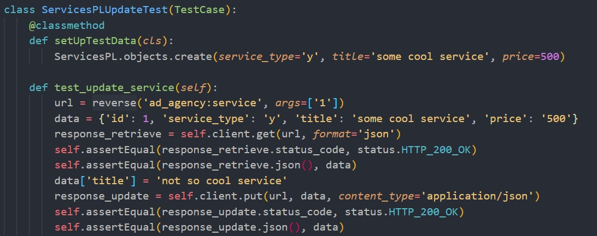
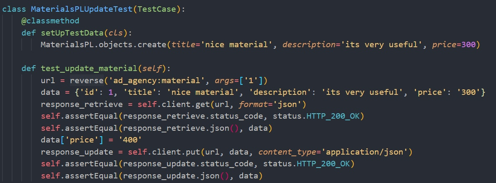

Advertising Agency
Info
Титульный лист
0. Введение
1. Цели и задачи работы
2. Этапы разработки
1 Контейнеризация и оркестрация
1.1 Контейнеризация
1.2 Оркестрация
2. Возможности Django REST
2.1 Тестирование
2.1.1 Ручное тестирование
2.1.2 Автоматическое
2.2 Пагинация
2.2.1 Дефолтная
2.2.2 Кастомная
2.3 Загрузка файлов
2.4 Сигналы
3. Тестирование Django REST
3.1 Тесты на модель
3.2 Тесты на GET запросы
3.3 Тесты на POST запросы
3.4 Тесты на PATCH запросы
Тесты на PATCH запросы
test_update.py
Результаты тестов
4. Адаптация интерфейсов Vue.js
Описание работы интерфейсов
3. Заключение
Advertising Agency
Docs
»
3. Тестирование Django REST »
2. Этапы разработки »
3.4 Тесты на PATCH запросы
Тесты на PATCH запросы
test_update.py
Изменение названия сервиса

Обновление стоимости материала

Обновление номера телефона исполнителя заказа
« Previous
Next »